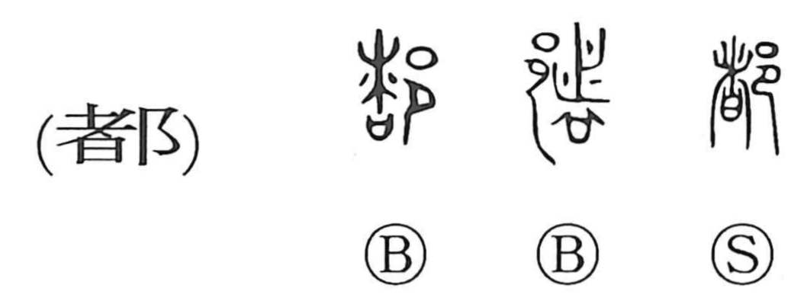

都

Kun: miyako | On: to, tsu
capital ・ metropolis ・ all ・ elegance
Explanation
Shirakawa treats 都 as a phono‑semantic compound. The left element 阝 is the 邑 radical, the figure of a fortified settlement where people gather. The right side 者, used here as the phonetic, originally depicted a clay hedge: branches piled over a sacred covenant vessel and topped with packed earth to keep out intruders. Together they show a large settlement ringed by an earthen palisade, hence “capital.” From the idea of the capital as the place where everyone comes together, the character further extends to mean “general, all,” and it also came to suggest cultured refinement, as in expressions for elegance. By contrast, 鄙 names the rural lands lying at the capital’s periphery.